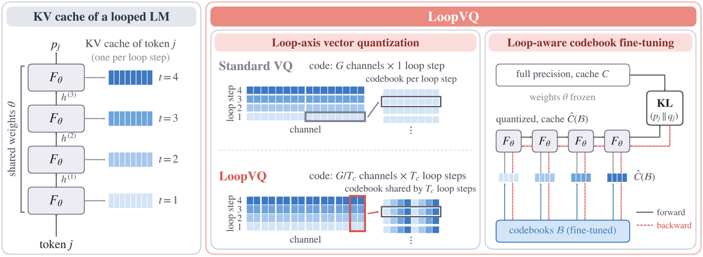

Picture a student who rewrites the same notes four times. Filing every copy on its own wastes space, since the copies mostly match. LoopVQ files the same line from all four copies under one label, then watches the first draft most, because its slips carry into every later copy.
같은 노트를 네 번 고쳐 쓰는 학생을 떠올려 보자. 내용이 거의 같으니 사본마다 따로 보관하면 공간이 아깝다. LoopVQ는 네 사본의 같은 줄을 라벨 하나로 묶어 보관하고, 첫 초안을 가장 신경 쓴다. 첫 초안의 실수는 이후 모든 사본에 옮겨 가기 때문이다.
How it works: the loop becomes a compression axis작동 방식은 반복 축을 압축 축으로 쓰기
Instead of one codebook per loop step, LoopVQ builds codes that span the same channels across four steps, at the same bits per element.
LoopVQ는 반복마다 코드북을 따로 두지 않고, 네 반복에 걸친 같은 채널을 하나의 코드로 묶는다. 원소당 비트 수는 그대로다.

- Couple loop steps.반복 묶기.A 16-value code now holds 4 channels from each of 4 loop steps. With plain k-means this roughly halves the reconstruction error at 0.5 bit on Ouro-1.4B.16개 값짜리 코드 하나가 네 반복에서 채널 4개씩을 담는다. 단순 k-means만으로도 Ouro-1.4B의 0.5비트 복원 오차가 대략 절반이 된다.
- Tune the codebooks.코드북 조정.Starting from Fisher-weighted k-means, train the entries to minimize KL to the full-precision output while every loop step reads the quantized cache. This takes minutes on one GPU.Fisher 가중 k-means에서 출발해, 모든 반복이 양자화된 캐시를 읽는 상태에서 원래 출력과의 KL이 최소가 되도록 코드북을 학습한다. GPU 한 장으로 몇 분이면 된다.
- Serve in SGLang.SGLang 서빙.Sink and recent tokens stay in bf16. Older pages become shared indices that each loop step reads through its own codebook slice.앞부분과 최근 토큰은 bf16으로 두고, 오래된 페이지는 공유 인덱스로 바꾼다. 각 반복은 코드북에서 자기 몫의 조각으로 이를 읽는다.
Key point: long reasoning breaks first핵심은 긴 추론이 가장 먼저 무너진다는 것
Long chain of thought is where low-bit caches fail hardest. Earlier vector quantizers lose most of the accuracy, while LoopVQ keeps about 90% of it.
긴 사고 사슬에서 저비트 캐시가 가장 크게 무너진다. 기존 벡터 양자화는 정확도 대부분을 잃지만 LoopVQ는 약 90%를 지킨다.
The damage also shows up as length. With CQ or TaSQ most GPQA-Diamond runs never finish before the 32K token cap, while LoopVQ hits the cap no more often than BF16.
피해는 길이로도 드러난다. CQ나 TaSQ를 쓰면 GPQA-Diamond 풀이 대부분이 3만 2천 토큰 상한까지 끝나지 않는다. LoopVQ가 상한에 닿는 비율은 BF16보다 높지 않다.
Results: holding up at a quarter bit결과는 0.25비트에서도 버티기
Adding TaSQ's key transforms keeps about 85% of BF16 long-reasoning accuracy even at 0.25 bit, where every method alone collapses.
TaSQ의 키 변환을 더하면 0.25비트에서도 BF16 긴 추론 정확도의 약 85%가 남는다. 이 비트에서는 어느 방법도 혼자서는 버티지 못한다.
| Method | 1.4B · 0.5 bit | 1.4B · 0.25 bit | 2.6B · 0.5 bit | 2.6B · 0.25 bit |
|---|---|---|---|---|
| BF16 | 56.4 | 56.4 | 64.9 | 64.9 |
| CQ | 15.7 | 14.4 | 16.6 | 16.7 |
| TaSQ | 19.5 | 14.8 | 28.3 | 18.1 |
| LoopVQ | 50.8 | 20.0 | 58.1 | 24.1 |
| TaSQ+LoopVQ | 54.9 | 48.1 | 63.8 | 56.0 |
If you serve a looped model, treat the loop axis as room to compress, not just a cost. And measure answer length next to accuracy. A cache that makes the model ramble to the cap can cancel its own speedup.루프 모델을 서빙한다면 반복 축을 비용으로만 보지 말고 압축할 여지로 보자. 그리고 정확도 옆에 답의 길이도 재자. 모델이 상한까지 횡설수설하게 만드는 캐시는 스스로 얻은 속도 이득을 지워 버린다.
Only small looped models are tested (Ouro 1.4B and 2.6B, Huginn 3.5B). Speed is compared with BF16 only, and scalar KV methods built for looped models are left out.시험한 모델은 작은 루프 모델뿐이다(Ouro 1.4B와 2.6B, Huginn 3.5B). 속도는 BF16과만 비교했고, 루프 모델용 스칼라 KV 양자화 방법은 비교에서 빠졌다.